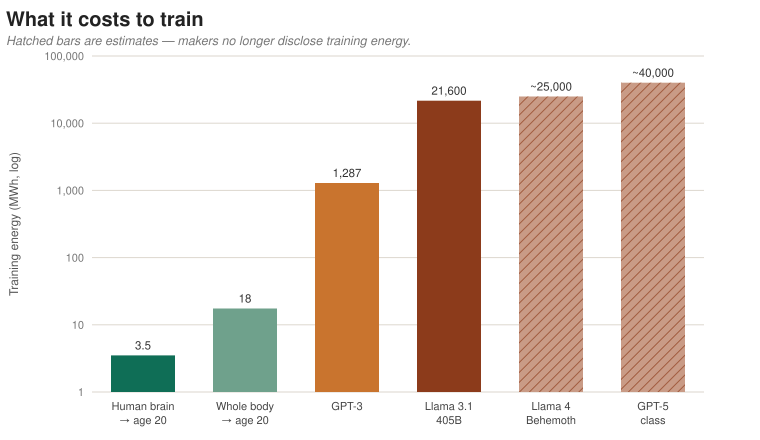
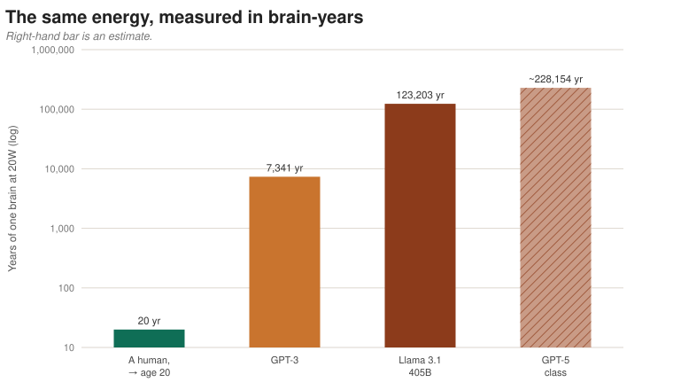
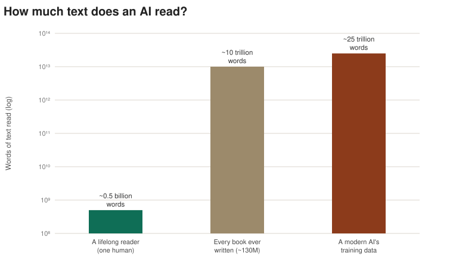
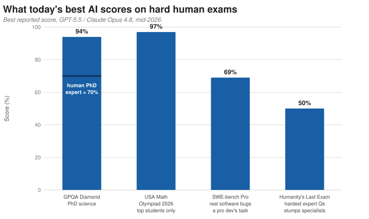
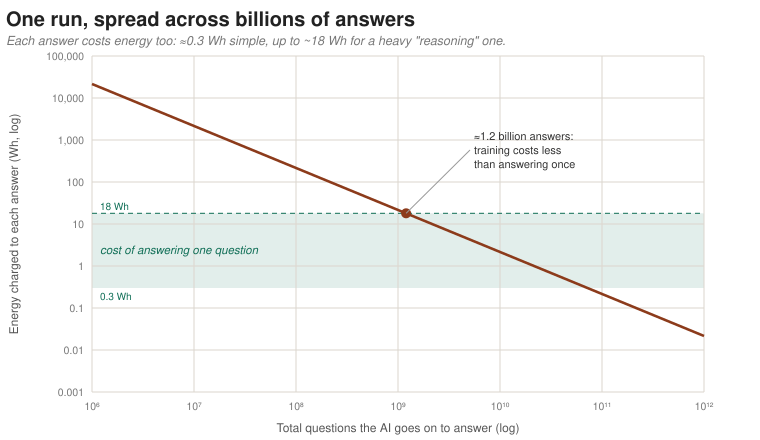
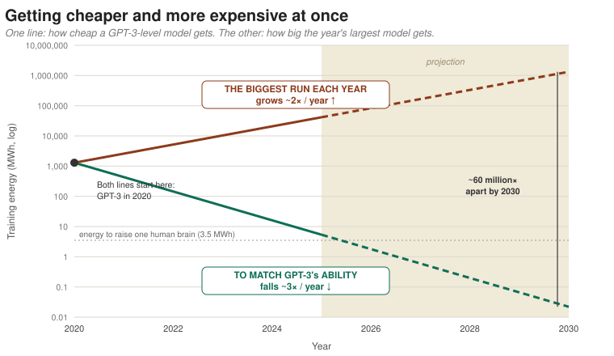

FoxxeLabs Research · Energy & Intelligence
What it actually costs to train a mind — and why the obvious comparison is misleading, in both directions.
The human brain runs on about 20W (twenty watts) — roughly a fifth of the energy your body burns just staying alive, and about the power it takes to charge a phone. On that budget it learns languages, reads faces, picks up social cues, masters crafts, and keeps learning for a lifetime — eighty years, ninety, sometimes a hundred (like Dick Van Dyke). The AI systems behind today's chatbots, by contrast, are trained in warehouses of computers that draw tens of millions of watts. The contrast is irresistible, and it usually gets used to argue one of two things: that the brain is miraculously efficient, or that AI is grotesquely wasteful. Both are true. Both also miss what the numbers actually say. So let's run them.
Take the brain at 20W and leave it running. A year works out to about 175 kilowatt-hours — roughly what a household gets through in a few weeks. Twenty years of growing up, the time it takes to train a capable adult mind, comes to about 3.5 megawatt-hours (a megawatt-hour is simply a million watt-hours — the unit the big numbers arrive in). If you object that you can't run a brain without keeping the rest of the body alive, the body at rest draws about 100W, which brings the twenty-year total to around 17.5 megawatt-hours.
Now the machines. Training GPT-3 — the model that first powered ChatGPT, back in 2020 — used an estimated 1,287 megawatt-hours of electricity. (That figure, and a comparison we'll come back to, comes from a 2021 study led by David Patterson.) By 2024, Meta's Llama 3.1 405B was trained by running about 16,000 of the fastest AI chips for nearly two months — roughly 21,600 megawatt-hours. The "405B" counts the model's parameters: the adjustable numbers it tunes as it learns, loosely its version of the connections between brain cells, and the usual rough measure of a model's size. More of them means more raw capacity — GPT-3 had 175 billion; Llama 3.1 has 405 billion; and the newest systems, like GPT-5.5 (the model now running ChatGPT) and Meta's two-trillion-parameter Llama 4 Behemoth, are larger still.

Here is something worth saying plainly: we don't actually know what it costs to train the latest AI models. No major company has published the energy used to train a flagship model since GPT-3, in 2020. OpenAI has released nothing for GPT-4 or GPT-5; Meta gave figures for Llama 3.1 but not for Llama 4. The numbers for the newest systems are therefore estimates, pieced together by independent researchers from chip counts, training time, and the math of how these models scale. The best available guess puts a GPT-5-class run at very roughly forty thousand megawatt-hours — about twice Llama 3.1 — but the honest error bars are wide. That is why this article leans on GPT-3 and Llama 3.1 for its solid ground: they are the last two big models whose makers actually told us. The trend, as the models get bigger, is toward less transparency, not more.
Megawatt-hours don't land in the gut, so let's convert the training runs into the one currency the brain deals in: time spent thinking at 20W. GPT-3's training used about as much energy as one human brain would burn in 7,300 years. Llama 3.1's used about 123,000 brain-years. A current top-tier run, on the best estimates, is north of 200,000 brain-years. Turn it around: a single large training run spends the brain-energy of raising somewhere between six and eleven thousand children to adulthood — on one AI.

On the face of it, training an AI costs thousands of times more than raising a person. But that comparison is rigged — and fixing it cuts both ways.
A newborn is not a blank slate. It arrives with hundreds of millions of years of evolution already built in — the wiring for sight, for language, for reading other people, for guessing what happens next. Twenty years of childhood don't build that brain from nothing; they fine-tune one that arrives mostly finished. So the 3.5 megawatt-hours isn't the cost of training a mind from scratch. It's the cost of the last, cheap, finishing step on top of an inheritance that was paid for long ago.
Where is the brain's real training bill, then? In evolution itself — every creature that ever lived, competed, and failed to pass on its genes. That bill isn't 3.5 megawatt-hours. It's effectively beyond counting: billions of years of life on Earth, paid once and handed down for free in every newborn's DNA. Measured against that, a single AI training run is a rounding error.
The training-run numbers are quoted just as selectively. The 1,287 megawatt-hours and the rest are the cost of the one run that worked. They leave out the failed attempts, the dead ends, the earlier versions, and the years of human research it took to find a recipe worth running at all. The true cost of arriving at a working AI — its own long process of trial and error — is far bigger than the run that gets reported, exactly as the true cost of arriving at the human brain is far bigger than one childhood. Both stories quote you the cheap finishing step and quietly leave out the expensive part.
A natural thing to assume is that an AI this expensive must have read, and must hold, everything — every book in every library, all of recorded history. It's worth being precise about how much it really reads, because the truth is stranger and more useful than the assumption.
The right unit isn't years; it's words. A modern AI is trained on something like thirty to forty trillion tokens — a token being roughly three-quarters of a word — so call it twenty-five trillion words of text. To feel that: a dedicated human reader might get through half a billion words in a long life. The AI's training set is about fifty thousand of those lifetimes. Stranger still, it now exceeds the total text of every book ever written. Google once counted about 130 million distinct books in existence; at a typical length that is on the order of ten trillion words — and the training set is two to three times larger than that. This is exactly why the industry frets about a "data wall": it is running out of fresh human writing to feed in.

So does it "know everything in all the libraries"? No — for two reasons that matter. First, the diet is mostly the public internet, not libraries. Most books are copyrighted, out of print, never digitised, or not in English, and never make it into a training set at all; the vast majority of what humanity has written and knows is offline, paywalled, or in people's heads. Second, and more importantly: an AI does not store what it read. A library keeps the actual text — you can pull any book off the shelf and read it word for word. An AI compresses all those trillions of words down into a fixed bundle of numbers, often far smaller than the text that went in. It keeps the patterns and the facts that came up again and again; it cannot reproduce most of what it saw, and it confidently fills the gaps with plausible inventions — which is what people mean when they say it "hallucinates."
It is less like a library and more like a brilliant, well-read person who has forgotten the page numbers: it remembers the gist of an enormous amount, recalls the famous passages, and misremembers the rest. Which is the whole case for keeping the library — a real, searchable store of text — outside the model, and letting a smaller system look things up rather than trying to cram the world into its memory.
By the tests we set it, today's best AI sits somewhere around graduate-to-expert level across an absurd range of subjects at once. On GPQA Diamond — PhD-level science questions written so that specialists get them right and outsiders don't — the current models (GPT-5.5, Claude Opus 4.8) score about 94%, comfortably above the roughly 70% a human PhD manages in their own field. On this year's USA Mathematical Olympiad, taken after the model's training cut-off so it couldn't have seen the answers, the best model scored 97% on proof-based problems only a handful of students in the country qualify to attempt. A Fields Medallist reported one model producing genuine PhD-level mathematics in a couple of hours. On real, open software bugs it fixes about 70% end to end.

And yet "grade level" is the wrong frame, for three reasons. First, the ability is jagged, not uniform: the same model that aces PhD chemistry will miscount the letters in a word, fumble a child's riddle, or lose the thread on a long task. It is superhuman in patches and sub-novice in others — not a smooth class rank. Second, the hardest exam is still half-failed: on Humanity's Last Exam, a set built specifically to stump specialists, even the best models get only about half. So "beyond PhD" is true on the tests we've already saturated and false on the genuinely hard frontier. Third, and most important: a test score is not understanding. The model is a lossy, compressed memory of an enormous amount of reading, not a person who grasps what they know — it can pass the exam and still not know which of its answers are wrong (though this is improving; the headline upgrade in Claude Opus 4.8 was that it flags its own uncertainty far more often).
If you forced a single description, it would be something like a brilliant, wildly over-read graduate student who tests at expert level in every subject simultaneously, occasionally says something no careful child would, and cannot always tell the two apart. Which is exactly what the rest of this article would predict: cram more text than every library into a lossy memory, add the cheap finishing step, and you get capability that is astonishingly broad and oddly shallow in spots — brilliant at the exam, not yet a mind.
There is one measure on which the machine wins outright, and the brain-years chart hides it. A human brain's lifetime of energy serves exactly one person. A training run's energy is paid once and then shared across every question the AI will ever answer. Spread GPT-3's training across the two billion people its makers imagined using it, and each person's share falls below the energy cost of sending a single text message — a point the original study makes itself.

This is the real difference, and it's built into what each system is. The brain can't spread its cost: it learns and it works in the same 20W head, for one person, and it all ends together. The AI can — train once, answer a billion times. What the brain does that we can't is bank its inheritance across deep time and pass it along for nothing. What the AI does that the brain can't is share one expensive education across millions of people at once.
One last twist, because it decides where this is all heading. The cost of training AI is falling and rising at the same time — depending on which question you ask.
Ask "what does it cost to train an AI as capable as GPT-3?" and the answer collapses year after year. Better methods and faster chips keep cutting the bill for a fixed level of ability — by independent estimates, the compute needed to hit a given capability falls on the order of three times every year. A model as good as GPT-3 — a marvel that cost over a million dollars of electricity in 2020 — now takes a tiny fraction of that, and the same kind of ability shows up on ordinary consumer hardware within about a year of reaching the frontier. By around 2025, training a GPT-3-class model costs roughly what it costs, in energy, to raise a single human brain to adulthood.
But ask "what does it cost to train the biggest AI anyone is building this year?" and the answer keeps climbing. Labs pour the savings straight back into scale: the compute behind frontier models has grown four to five times a year for over a decade, and the power a single top run draws has roughly doubled every year, now exceeding a hundred megawatts. If that holds, independent forecasters expect a frontier training run to need several gigawatts — the output of a few full-size power stations — by around 2030.

These are the same two forces from the brain comparison, now playing out in real time. The falling line is the brain's own lesson — get the same ability for far less — already arriving. The rising line is the opposite bet: that brute scale keeps buying new ability worth the bill. Whether that bet pays off, or runs into a wall of power, money, and data first, is the open question hanging over the whole field.
So the honest takeaway isn't "brains are thousands of times more efficient." It's that both the brain and the AI sit on top of a vast, mostly-uncounted history — with a cheap finishing step on top of it — and that they pass that history along in opposite ways. Evolution pays once and ships the result in every newborn; a training run pays once and ships the result to every user.
If it isn't a mind, and isn't a library, what is it actually good for? The most useful way to picture what these systems have become is neither a brain in a box nor an all-knowing oracle, but a co-worker — a fast, tireless, astonishingly well-read colleague who will draft, summarise, translate, write code, and reason through a problem in seconds, and who will also, every so often, say something confidently wrong. You wouldn't hand a colleague like that the keys and walk away. You'd give them work, check what comes back, lean on them hardest where they're strong, and trust them least where they're not.
That quietly changes which skill is worth having. For most of history the prize went to knowing things. When a capable-but-fallible expert is available to everyone for the price of electricity, the prize shifts to directing and checking: asking the right question, recognising the plausible answer that's actually wrong, knowing which task to hand over and which to keep. Work becomes less solo performance and more supervision — you and an uneven, brilliant assistant, each doing the part you're better at. The people who get the most from these tools won't be the ones who trust them most, or least, but the ones who judge best when to do which.
And the trend lines say this colleague is about to be everywhere. The cost of a given ability is falling several-fold a year, so the expert-on-tap that cost a fortune in 2023 runs on a laptop tomorrow; and because one training run is shared across millions of people, everyone gets the same capable assistant at once. The question was never going to be whether we work alongside these systems — that is already happening — but how well we learn to. The brain's twenty watts buys one expert per skull, served to one person for one lifetime. This buys a passable one for nearly everyone, all at the same time. What we make of that — how we divide the work, and how carefully we check it — is now the interesting part.
© 2026 Foxxe Labs · Donegal, Ireland · Cognitive architecture, in production.